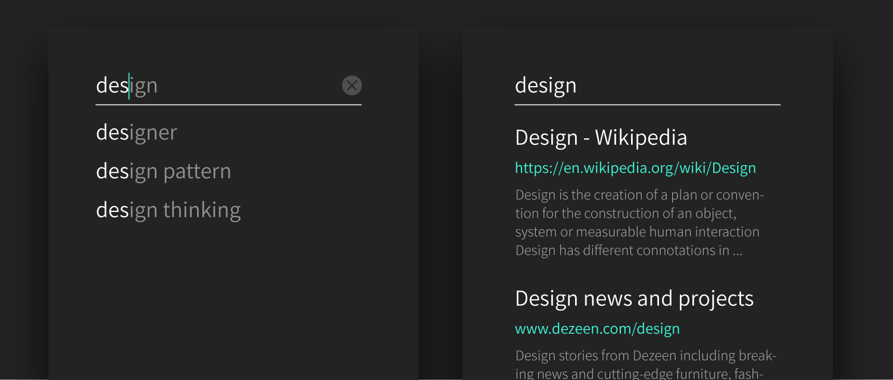
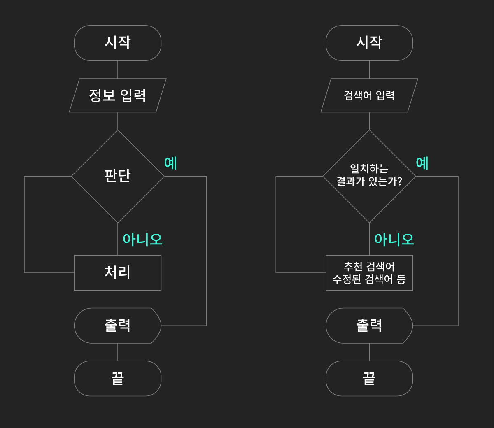

패턴
패턴은 사용자가 목적을 달성하기 위한 과정입니다. 마음에 드는 글을 저장하거나 다음 여행지의 호텔을 예약하는 것과 같이 복합적인 목적을 달성하는 과정을 설계하는 것으로 사용자가 각 단계를 예측할 수 있어야 합니다.

종류
패턴은 서비스의 핵심이 되는 목적을 달성하기 위해 다양한 패턴을 사용합니다. 패턴은 환경과 상황에 따라 다르기 때문에 종류를 나누기는 어렵습니다. 단 어떤 패턴이라도 3가지 요소를 생각해야합니다.
- 맥락: 사용자가 어떤 상황에서 무엇이 필요한가
- 흐름: 어떤 과정을 거치는가
- 구현: 어떻게 인지하고 사용하는가
고르기
사용자는 현실의 패턴이 익숙합니다. 웹,모바일 분야는 사용자가 편하게 사용할 수 있도록 오랫동안 발전해왔기 때문에 보편적으로 쓰이는 패턴을 사용하는 것이 좋습니다.
만들기
서비스에 알맞게 기존의 패턴을 변형하거나 이전에 경험하지 못한 패턴을 제시해야할 때가 있습니다. 사용자는 현실의 패턴에 익숙하기 때문에 현실을 기준으로 만듭니다. 앞서 말했듯 맥락, 흐름, 구현을 이해해야합니다. 많이 사용되고 있는 검색 패턴을 예시로 살펴보겠습니다.
검색
언제 어디서든 내가 가지고 있는 단서로 원하는 것을 찾는 기능입니다. 내가 찾고자 하는 정보 (나에게 필요한지 몰랐던 정보조차)를 찾을 수 있게 해주는 것이 목적입니다.
맥락
- 목적: 영화 찾기
- 방식: 사용자가 기억하는 단어로 찾기
구현
- 동선:
- 형태: 텍스트 필드, 그리드 리스트
동선 짜기
'흐름'에서 찾아낸 정보를 토대로 각 단계별로 필요한 것들을 정리합니다. 단계별 목적을 어떤 페이지에서 달성해주고 다음 단계로 넘어갈지를 계획합니다. 기본 시나리오로 텍스트 필드에 자신의 단서를 입력하고 서비스는 그에 대한 피드백을 줍니다.

재료 고르기
목적을 위해 컴포넌트가 결합되어 다양한 기능을 수행하는 규칙입니다. 패턴은 기기를 이용하는 사용자의 모든 맥락을 고려한 규칙을 만들어내는 것입니다. 패턴이 무엇이냐에 따라 페이지가 정해집니다.
형태 짜기
각 페이지에서 필요한 목적을 달성하기 위해 컴포넌트를 배치합니다. 지속적으로 검색할 수 있도록 언제 어디서나 검색을 발견할 수 있어야합니다. 형태를 짠 이후에는 상태에 대해서 표시되는 방식을 정합니다. 입력-출력 만약 검색이 중요하다면 검색을 계속 할 수 있는 형태여야 합니다. 언제 어디서나 검색을 발견할 수 있어야합니다.